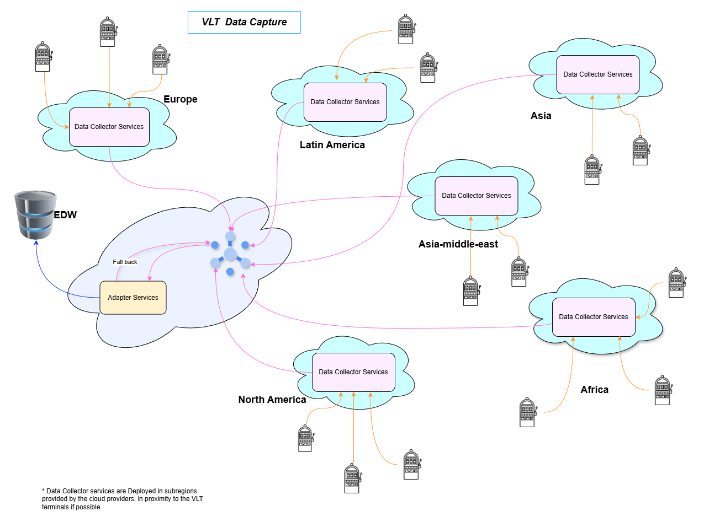

Architecting a Scalable Financial Pipeline for 30,000 VLT Machines Distributed all over the World
Context
Globally, a gaming company operates 30,000 VLT machines. The financial transaction data they produce
needs it to be transmitted to the company's Enterprise Data Warehouse (EDW) in the UK, assuming a
network
connection exists for this purpose.
One machine will generate two financial transactions in 3 seconds.
Question
As an architect, how would you design a scalable, high performance solution to collect, process and
store financial data from 30,000 VLT machines into the EDW.
Key Considerations
Efficient data collection from a large distributed estate.
Ensuring scalability as the number of terminals increases.
Reducing the network bandwidth usage and improving the performance.
Ensuring the data integrity.
Handling real-time or near-real-time processing requirements.
Transforming data to fit the schema of the EDW.
Ensuring fault tolerance and observability.

As our terminals are distributed all over the world, and assumes the distribution is as follows, for
the
provided 30K VLT machines.
Europe: 10K
North America: 10K
Latin America: 3K
Africa: 2K
Asia: 5K
From one VLT machine, we are expecting two data in 3 seconds, assumes the machine is
functioning non-stop,
we will be having 20 intervals of 3 seconds in 60 seconds, that means it will be getting 40
financial
data in one minute.The maximum load we will be getting at peak hours will be as follows.
40 x 30000 = 1,200,000 transactions per minute
1,200,000/60 = 20,000 request per seconds from all over the world, if the provided 30K machines
are
functioning.
Since these are distributed all over the world, and not all the VLT machines are functioning,
assuming
half of the population is sleeping and our peak load will be reduced to
10K requests per second.
To reduce the network bandwidth, we can transfer the data in a timed intervals, like say for
simplicity,
I take the interval as 30 seconds.
From 30K VLT machines there will be 60K requests per minute, taking the geo-distributions again, the
maximum peak load will be 30K requests per minute.
30K Requests Per Minutes
30,000/60 = 500 Requests per second, which is still a considerable amount of traffic.
Financial data being transmitted consists of VLT-Machine-ID, stake amount, win amount, timestamp. No
keys are transmitted, only values in a specific order to reduce the bandwidth usage.
Define post-method with data as follows.
for one transaction:
VLT-Id|stakeAmount|winAmount|timeStamp(epoch time)|sha1Sum(VLT-id, stake amount, win amount, and
timestamp)
* The hash is used to verify the request data, being transmitted over the network.
When sending in batches of one minutes, we can avoid the hash value calculation per transaction, to
hash value to the full packet.
For One transaction: 6 + 5 + 7 + 10 + 3 (separating chars) + 1 (# for separating the one
transaction
data) = 32 Chars per transaction.
For One minutes 40 transactions => 40(sha1sum size) + (32 x 40 ) = 1320 Bytes of data per
request.
in 30 seconds we have 20 transactions => 40(sha1Sum size) + (32 x 20 ) = 660 Bytes of data per
request.
* This data is tiny even in the high latency network this will take little time, Even in slow mobile
network this transmission happens instantly.
Minimize latency via Regional Data Collectors:
Deploy data collection services in multiple
regions, strategically located near VLT machines, to significantly reduce data transmission
latency. The subregions will be added when Identifies the more data is being pushed to our
system.
Scalable, Serverless Data Collection:
Implement data collector applications using a serverless
architecture to ensure automatic scaling and efficient resource utilization. Use Google Cloud Run Service.
Leverage Cloud-Based Queuing:
Use cloud-provided queuing services to manage and buffer data
flow, ensuring reliable data delivery. Use Google Pub/Sub
Optimize EDW Integration with Regional Adapters:
Position adapter services in the same region as
the Enterprise Data Warehouse (EDW) to minimize latency during data transfer.
Ensure Data Integrity with Idempotent Database Operations:
Design database operations to be idempotent, enabling safe retries and preventing data duplication
in case of failures.
Guarantee Data Delivery with Acknowledgment Mechanisms:
Implement acknowledgment mechanisms (e.g., Kafka acknowledgments) to prevent data loss during
processing.
Encryption
Requests are transmitted over http/3 network, both for internal and external communication.
Data is encrypted using Symmetric encryption, Use Cha-cha20-Poly1305
for better performance.
Authentication (Token-based authentication)
Considerations
Use short-lived tokens and implement token rotation.
If required, implement geographic restrictions on token usage based on IP address or other location
data.
Implement rate limiting to prevent abuse and denial-of-service attacks.
Issue tokens from a central, secure server.
Distribute token validation logic to the data collection services, for reducing the latency.
Consider transmitting over https/3, this will add some data in the headers, this will not add that much
load.
GZIP compression to reduce the bandwidth, for this small amount of data this will not yeild that
much significate gain, still useful when we transfer more data over a period.
The Google Pub/Sub provides Low latency, and it scales when needed using its infrastructure, and it is
managed by the cloud provider.
Google Pub/Sub has inter-regional-connectivity to share the information, we can create topic once, and
it is available in across the Google Cloud regions, and publishers (here the data collection
services) can publish to the topics.
Since we are using Google CloudRun as a serverless platform, as these are scalable by nature, we
can create replication on demand, increasing the calculation power.
Adapter services will use the partitions in the Pubsub queue for effective consumption of the
data.
Bulk insertion to the database will be used to insert the batch data being transmitted (one minute/30
seconds data).
Using plain/text data to communicate between VLT terminals and Data collector services.
We are implementing a serverless architecture to leverage its inherent auto-scaling capabilities. This allows us to dynamically adjust resource allocation based on the real-time processing demands of our global VLT network. With an anticipated 50% average utilization across VLT machines, serverless will enable us to scale resources proportionally, resulting in significant cost efficiencies. Further more since thse are serverless applications, our maintanance cost also reduced significantly.
While transferring the data from VLT machine to Data collector service
All the data needs to be validated for the integrity, once the message validation is successful, we will be published the changes into the Google Pub/Sub,
and the acknowledgement is sent back to the VLT instance, if the acknowledgement is not successful we will be saving the data into a file for transferring the data during the recovery cycle.
The Same method will be used when the Data collector service failed to publish the data to the pubsub queue, we save the data in VLT machine.
When Transfer the information from the Adapter Service to EDW
A Separate post-controller endpoint will be used to transfer recovery data; in that case we can send the data in files, for a context if the Connectivity is failed for 4 hours, then the data will be stored in a file, preferably one file for one hour.
This end point in the collector service will parse the file and create data from this and send to the queue.
If we consider the 40 financial data per minute, we will be having a total of 40 x 60 = 2400 transactions per hour.
1320 bytes per minute, translate to 1320 bytes x 60 = 79.2Kb of data per hour.
Number of requests processed per second at each level
At Adapter level
At Data collection service level
Error Rates and recovery requirements.
Database operations and health checks.
Active Data collection services at a time, by region.